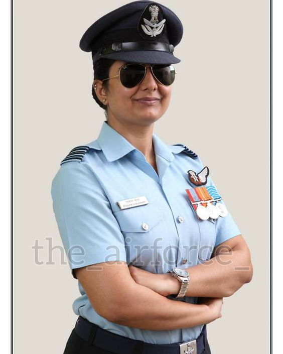
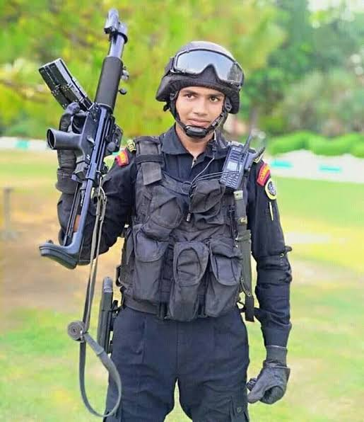
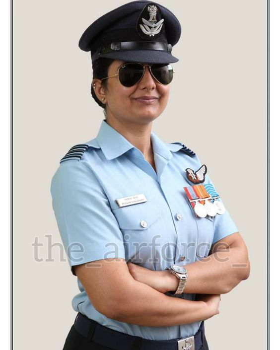
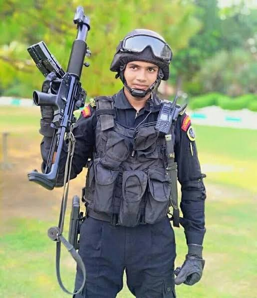

The Indian Army is the land-based branch and the largest component of the Indian Armed Forces. The President of India is the Supreme Commander of the Indian Army,and its professional head is the Chief of Army Staff (COAS), who is a four-star general. Two officers have been conferred with the rank of field marshal, a five-star rank, which is a ceremonial position of great honour. The Indian Army was formed in 1895 alongside the long established presidency armies of the East India Company, which too were absorbed into it in 1903. The princely states had their own armies, which were merged into the national army after independence. The units and regiments of the Indian Army have diverse histories and have participated in several battles and campaigns around the world, earning many battle and theatre honours before and after Independence.The primary mission of the Indian Army is to ensure national security and national unity, to defend the nation from external aggression and internal threats, and to maintain peace and security within its borders. It conducts humanitarian rescue operations during natural calamities and other disturbances, such as Operation Surya Hope, and can also be requisitioned by the government to cope with internal threats. It is a major component of national power, alongside the Indian Navy and the Indian Air Force.
The Indian Navy is the maritime branch of the Indian Armed Forces. The President of India is the Supreme Commander of the Indian Navy. The Chief of Naval Staff, a four-star admiral, commands the navy. As a blue-water navy, it operates significantly in the Persian Gulf Region, the Horn of Africa, the Strait of Malacca, and routinely conducts anti-piracy operations and partners with other navies in the region. It also conducts routine two to three month-long deployments in the South and East China seas as well as the western Mediterranean sea simultaneously.The primary objective of the navy is to safeguard the nation's maritime borders, and in conjunction with other Armed Forces of the union, act to deter or defeat any threats or aggression against the territory, people or maritime interests of India, both in war and peace. Through joint exercises, goodwill visits and humanitarian missions, including disaster relief, the Indian Navy promotes bilateral relations between nations.
The Indian Air Force (IAF) is the air arm of the Indian Armed Forces. Its complement of personnel and aircraft assets ranks third [11] amongst the air forces of the world.[12] Its primary mission is to secure Indian airspace and to conduct aerial warfare during armed conflict. It was officially established on 8 October 1932 as an auxiliary air force of the British Empire which honoured India's aviation service during World War II with the prefix Royal.[13] After India gained independence from United Kingdom in 1947, the name Royal Indian Air Force was kept and served in the name of Dominion of India. With the government's transition to a Republic in 1950, the prefix Royal was removed.Since 1950, the IAF has been involved in four wars with neighbouring Pakistan. Other major operations undertaken by the IAF include Operation Vijay, Operation Meghdoot, Operation Cactus and Operation Poomalai. The IAF's mission expands beyond engagement with hostile forces, with the IAF participating in United Nations peacekeeping missions.
The National Security Guard states its mission as:"Train, equip and keep in readiness a special force capable of swiftly and effectively combating terrorism to live up to its motto Sarvatra Sarvottam Suraksha"The NSG is a 'Federal Contingency Deployment Force' to tackle all facets of terrorism in the country.[10] As a specialised counter-terrorism force, it is intended to be used "only in exceptional situations" and is not meant to take over the "functions of the State Police Forces or other Para Military Forces".[10] Yet, over the years its role has been expanded to provide personal security to influential politicians regardless of the real threat that they face.However, in January 2020, the NSG was withdrawn from this task of VIP security to ensure its focus on its original roles as an elite counter-terrorism and anti-hijacking force.The NSG is trained to conduct counter-terrorist tasks, including countering hijackings on the land, sea, and air; bomb disposal (search, detection, and neutralisation of IEDs); PBI (Post Blast Investigation) and Hostage Rescue missions.